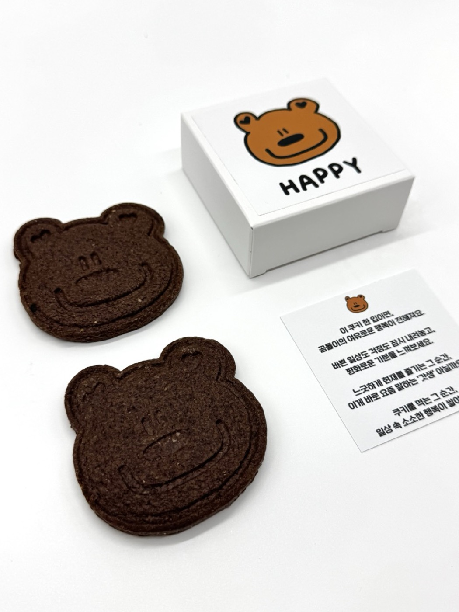
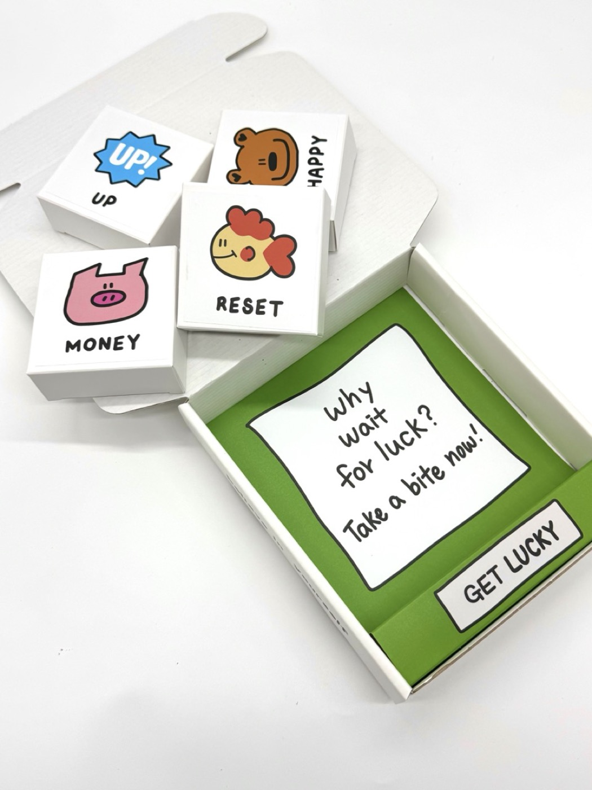
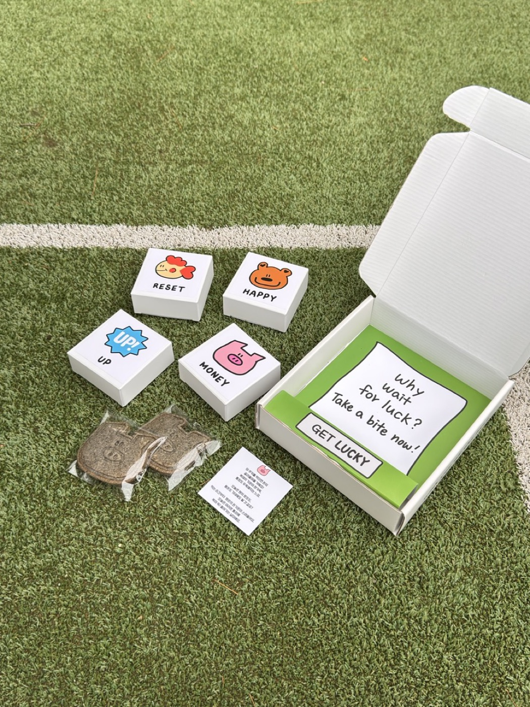
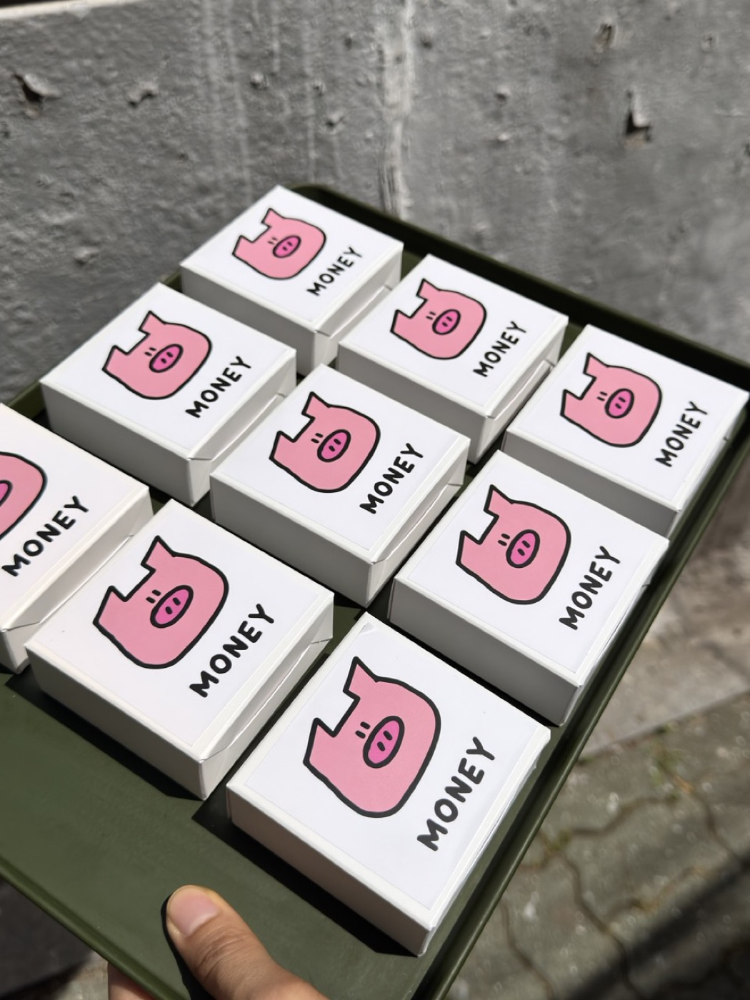

쿠키, 그냥 간식이 아니에요
먹는 즐거움만이 아니라, 열어보는 순간의 재미와 메시지까지 함께 남는 제품이에요.
아무 이유 없이 힘들고, 괜히 기분이 꺼질 때가 있잖아요. 행운쿠키는 그럴 때 가볍게 건넬 수 있는 작은 응원이 되도록 만든 쿠키예요. 일상에 스며드는 소확행처럼, 평범한 하루에도 미소 한 스푼을 더해줘요.

아무 이유 없이 힘들고, 괜히 기분이 꺼질 때가 누구에게나 있어요. 이럴 때 가볍게 건넬 수 있는 한 입의 응원이 있다면, 생각보다 하루의 분위기가 조금 다르게 흘러가기도 해요.
먹는 즐거움만이 아니라, 열어보는 순간의 재미와 메시지까지 함께 남는 제품이에요.
부담스러운 선물보다, 일상 속에서 자연스럽게 전할 수 있는 작은 응원에 가까워요.
답례품이나 행사 선물은 물론이고, 그냥 나 자신을 위한 작은 보상으로도 잘 맞아요.
기분과 상황에 따라 고를 수 있도록, 각각의 감정을 담은 네 가지 쿠키로 구성했어요.

귀엽고 달달한 한 입이면, 일상에 작은 행복이 쌓여요. 행복 가득, 오늘은 미소 챙기기.

금붕어처럼 답답함을 가볍게 흘려보내는 느낌. 잡생각 리셋, 머릿속 새로고침 가자.

복돼지가 행운을 불러오는 듯한 기분으로, 오늘은 내 통장도 두둑해지길 바라는 마음.

하트 한 입, 오늘 기분 UP. 에너지 풀충전, 오늘도 파이팅.
행운쿠키가 실제로 놓였을 때의 분위기와 선물 같은 인상이 어떻게 보이는지 한 번에 감이 오도록 실물 컷을 같이 모아뒀어요.





nothingmatters의 행운쿠키는 프랜차이즈 대량생산 제품과 다르게 한 분, 한 분을 떠올리며 손으로 직접 만드는 수제디저트답례품이에요. 포장도 깔끔한 개별포장쿠키로 준비되어 답례나 선물용으로 쓰기 좋아요.
백화점쿠키선물이나 고급쿠키세트를 고민할 때, 너무 딱딱하거나 멀게 느껴지지 않으면서도 정성과 완성도가 느껴지는 선물로 보이게 하고 싶다면 잘 맞아요.
답례다과, 답례품간식, 과자답례품처럼 여러 명에게 나누어야 하는 상황에서는 위생적이고 실용적인 구성이 더 중요하잖아요. 행운쿠키는 그 부분까지 자연스럽게 챙길 수 있어요.
행운쿠키는 메시지와 쓰임새가 함께 중요한 제품이라 아래 항목만 먼저 정리해두면 상담이 훨씬 쉬워져요.
답례용인지, 선물용인지, 회사 행사인지, 개인적인 응원 선물인지에 따라 가장 어울리는 흐름으로 안내하는 방식이 잘 맞아요.
수량이 많거나, 답례 목적이 분명하거나, 행사 성격에 맞는 구성으로 정리해야 하는 경우는 상담형으로 이어지는 게 자연스러워요.
행운쿠키는 행운쿠키, 응원쿠키, 감사선물, 가벼운선물, 간식세트, 디저트선물추천, 디저트답례품처럼 작은 응원과 가벼운 마음을 전하고 싶은 검색 흐름에서 많이 찾는 제품이에요.
행운쿠키, 응원쿠키, 졸업 선물, 새해 선물처럼 너무 무겁지 않지만 마음이 보이는 간식을 찾을 때 가장 자연스럽게 고르기 좋아요.
감사선물, 가벼운선물, 답례품간식, 개별포장쿠키처럼 실용적이면서도 귀여운 디저트답례품을 찾는 경우에도 잘 어울려요.
행운쿠키는 “어디에 쓰기 좋은지”, “누구에게 주기 좋은지”를 많이 궁금해하는 제품이라 자주 나오는 질문을 먼저 정리했어요.
행운쿠키는 응원과 감사 장면에 특히 잘 맞기 때문에, 행운 · 응원 선물인지 선생님 간식처럼 가벼운 선물인지 먼저 나누면 선택이 쉬워져요.
졸업, 새해, 감사선물, 가벼운 응원 선물처럼 작은 마음을 전하는 장면이면 이 가이드가 가장 잘 맞아요.
행운쿠키 가이드 보기유치원선생님간식, 어린이집간식선물처럼 부담 없고 귀여운 감사 선물 흐름이라면 이 가이드도 함께 보기 좋아요.
선생님 간식 가이드 보기큰 선물보다 작은 마음이 더 잘 전해지는 순간들이 있잖아요. 행운쿠키는 그런 장면에 자연스럽게 어울리는 제품이에요.
월요병에 시달리는 직장인, 시험 앞둔 수험생, 육아에 지친 엄마 아빠처럼 작은 응원이 필요한 순간에 잘 맞아요.
유치원선생님간식, 어린이집간식선물, 답례품간식처럼 가볍지만 마음이 보이게 준비하기 좋아요.
결혼식답례, 퇴사답례품, 육아휴직답례품, 승진답례품처럼 인생의 중요한 장면에 부담 없이 전하기 좋아요.
가벼운 선물, 디저트선물, 프리미엄답례품처럼 품격은 챙기되 너무 무겁지 않은 선물을 찾을 때 잘 맞아요.
특별한 날에는 물론이고, 평범한 날에도 나와 소중한 사람에게 작은 응원을 전할 수 있도록 nothingmatters 행운쿠키를 준비했어요.
답례품 · 회사 행사 · 유치원/어린이집 간식 선물 · 생일 · 가벼운 응원 선물 상담 가능특별한 날에도, 평범한 날에도 작은 응원 선물 흐름을 함께 정리해드릴게요.